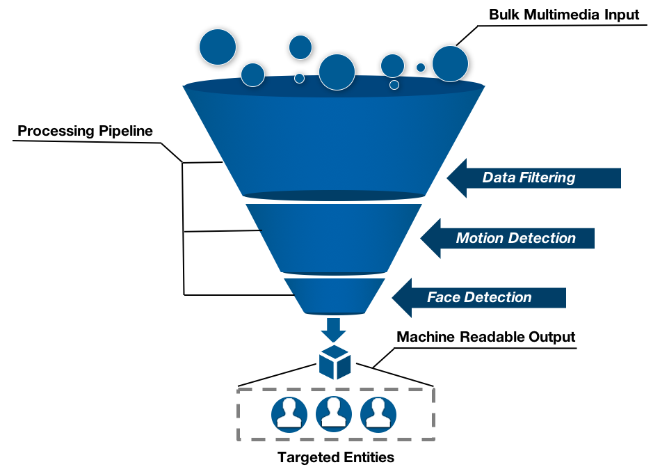
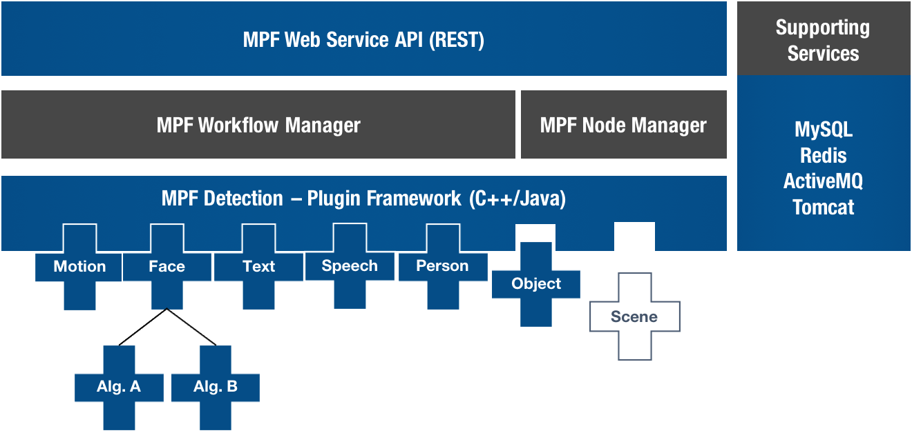

The Open Media Processing Framework, is a scalable, web-friendly platform designed to bring modern algorithms to media analytics.

Customizable pipelines allow users to combine multiple algorithms based on performance (fast to slow) to increase throughput on large datasets
System Design

Provides a C++ component plugin architecture for:
- Detection
- Tracking
- Classification
And pre-built components for OpenCV Face Detection, Caffe Deep Learning, and many more...
Head over to the GitHub project to get started.
{% for post in paginator.posts %}
{{ post.title }}
{% if post.subtitle %}
{{ post.subtitle }}
{% endif %}
Posted on {{ post.date | date: "%B %-d, %Y" }}
{{ post.excerpt | strip_html | xml_escape | truncatewords: site.excerpt_length }}
{% assign excerpt_word_count = post.excerpt | number_of_words %}
{% if post.content != post.excerpt or excerpt_word_count > site.excerpt_length %}
[Read More]
{% endif %}
Tags:
{% if site.link-tags %}
{% for tag in post.tags %}
{{ tag }}
{% endfor %}
{% else %}
{{ post.tags | join: ", " }}
{% endif %}
{% endfor %}